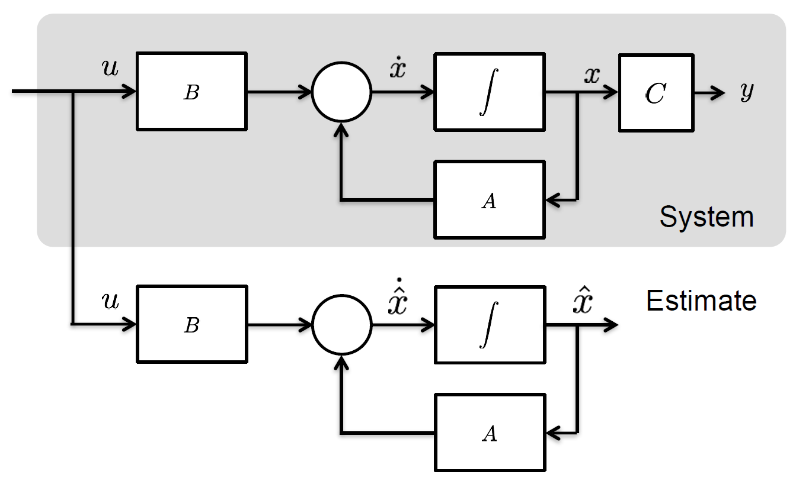
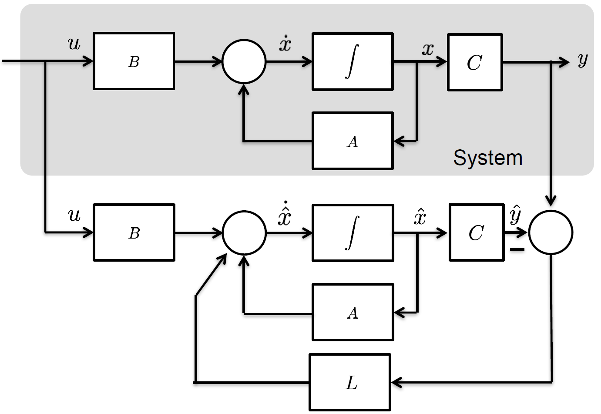
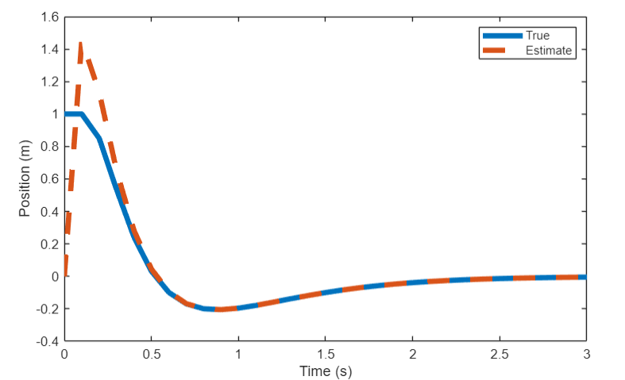
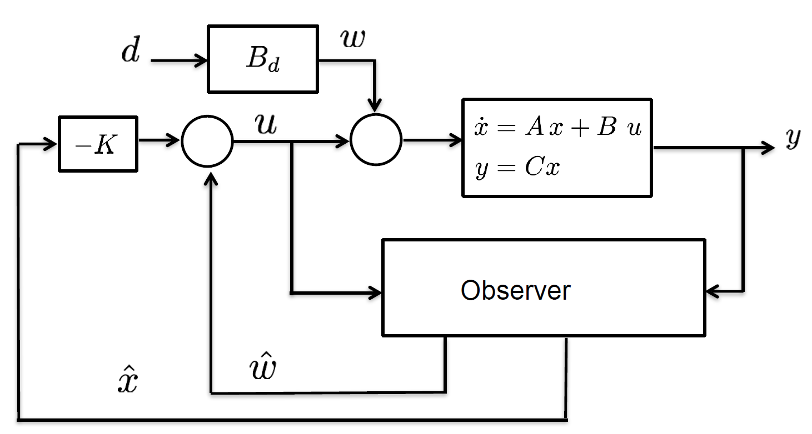

Dr Guilherme Froes Silva
School of Electrical Engineering & Robotics
Queensland University of Technology
EGH445 - Modern Control
Consultation: GP-S1111
Email: g.froessilva@qut.edu.au
So far, we’ve designed controllers assuming full state availability:
State Availability Problem:
We often cannot measure all states directly and only have access to outputs:
y(kT) = Cx(kT) + Du(kT)
Important
How can we implement state-feedback, u(kT) = -Kx(kT), when x(kT) is not directly measured?
Can we calculate the state from the output?
Given the output equation for a discrete-time system: y(kT) = Cx(kT) + Du(kT)
Assuming D=0 for simplicity, could we simply invert C?
\hat{x}(kT) \overset{?}{=} C^{-1}y(kT)
This is not possible in general!
As the matrix C\in\mathbb{R}^{p \times n} is often not square.
Consider a system with two states (n=2) and one output (p=1): \begin{align*} \underbrace{\begin{bmatrix}x_1(t) \\ x_2(t)\end{bmatrix}}_{x(t)\in\mathbb{R}^n} &= \begin{bmatrix} 0 & 1 \\ -0.1 & -0.2 \end{bmatrix} \begin{bmatrix}x_1(t) \\ x_2(t)\end{bmatrix} + \begin{bmatrix} 0 \\ 1 \end{bmatrix} u(t) \\ \underbrace{y(t)}_{y(t)\in\mathbb{R}^p} &= \begin{bmatrix} 1 & 0 \end{bmatrix}_{\textcolor{red}{p\times n}} \begin{bmatrix}x_1(t) \\ x_2(t)\end{bmatrix} \end{align*}
That is, can we simulate the system and use the states?
Consider the discrete-time system: \textcolor{blue}{x(kT+T) = Gx(kT) + Hu(kT)} Let’s build a “copy” of the system to estimate the state \hat{x}(kT): \textcolor{green}{\hat{x}(kT+T) = G\hat{x}(kT) + Hu(kT)}

This is an open-loop observer or predictor.
Define the estimation error e(kT) = \textcolor{blue}{x(kT)} - \textcolor{green}{\hat{x}(kT)}.
Now, let’s find the dynamics of the estimation error: \begin{align*} e(kT+T) &= \textcolor{blue}{x(kT+T)} - \textcolor{green}{\hat{x}(kT+T)} \\ &= \textcolor{blue}{(Gx(kT) + Hu(kT))} - \textcolor{green}{(G\hat{x}(kT) + Hu(kT))} \\ &= G\left(x(kT) - \hat{x}(kT)\right) \\ &= G e(kT) \end{align*}
Problem: The error dynamics are given by the open-loop system matrix G.
Idea
Use the measured output y(kT) to correct the state estimate \hat{x}(kT).
Consider the system: \begin{align*} \textcolor{blue}{x(kT+T)} &= \textcolor{blue}{Gx(kT) + Hu(kT)} \\ \textcolor{blue}{y(kT)} &= \textcolor{blue}{Cx(kT)} \end{align*} (Assuming D=0 for simplicity, can be added back later). Luenberger Observer: \color{green} \hat{x}(kT+T) = G\hat{x}(kT) + Hu(kT) + \textcolor{red}{L \big(y(kT) - \hat{y}(kT)\big)}

Observer Error Dynamics:
The observer equation is: \begin{align*} \hat{x}(kT+T) &= G\hat{x}(kT) + Hu(kT) + L (Cx(kT) - C\hat{x}(kT)) \\ \color{green} \hat{x}(kT+T) &= \color{green}(G - L C)\hat{x}(kT) + Hu(kT) + L C x(kT) \end{align*}
Now, let’s find the dynamics of the estimation error e(kT) = x(kT) - \hat{x}(kT): \begin{align*} e(kT+T) &= x(kT+T) - \hat{x}(kT+T) \\ &= \textcolor{blue}{(Gx(kT) + Hu(kT))} - \textcolor{green}{((G - L C)\hat{x}(kT) + Hu(kT) + L C x(kT))} \\ &= G(x(kT) - \hat{x}(kT)) - L C (x(kT) - \hat{x}(kT)) \\ &= \textcolor{red}{(G - L C)} e(kT) \end{align*}
Important
The observer error dynamics are governed by the matrix (G - L C). We want to choose the observer gain L such that the error e(kT) converges to zero quickly, i.e., the eigenvalues of (G - L C) are stable (magnitude less than 1) and have desired dynamics.
Question
Can we always find an observer gain L to place the eigenvalues of (G - L C) arbitrarily?
Analogy
For state feedback u = -Kx, we could arbitrarily place the eigenvalues of (G - HK) if and only if the system (G, H) was controllable.
For observer design, the ability to place the eigenvalues of (G - L C) depends on the system (G,C) being observable.
Observability
A discrete-time system, \,x(kT+T) = Gx(kT) + Hu(kT), \quad y(kT) = Cx(kT), is completely observable if, for any initial time k_0 T, the initial state x(k_0 T) can be uniquely determined from the knowledge of the input sequence u(kT) and the output sequence y(kT) for a finite number of steps.
Theorem
The pair (G, C) is completely observable if and only if the observability matrix \mathcal{O} has rank n, where n is the dimension of the state vector x.
How to check:
numpy.linalg.matrix_rank(ObsvMatrix) (Python)rank(ObsvMatrix) (MATLAB).Consider a discrete-time model for a vehicle, with m=1, b=0.5.
Assume a sampling time T=0.1.
Continuous: A = \begin{bmatrix} 0 & 1 \\ 0 & -b/m \end{bmatrix} = \begin{bmatrix} 0 & 1 \\ 0 & -0.5 \end{bmatrix}, \quad B = \begin{bmatrix} 0 \\ 1/m \end{bmatrix} = \begin{bmatrix} 0 \\ 1 \end{bmatrix}.
Discretised (using c2d(...) in MATLAB): G = \begin{bmatrix} 1 & 0 \\ 0.0975 & 0.9512 \end{bmatrix}, \quad H = \begin{bmatrix} 0.0049 \\ 0.0975 \end{bmatrix}.
Case 1: Position Measurement
Let C_1 = \begin{bmatrix} 1 & 0 \end{bmatrix}.
\mathcal{O}_1 = \begin{bmatrix} C_1 \\ C_1 G \end{bmatrix} = \begin{bmatrix} 1.0000 & 0 \\ 1.0000 & 0.0975 \end{bmatrix}.
\det(\mathcal{O}_1) = 1 \times 0.0975 - 0 \times 1 = 0.0975 \neq 0.
Rank is 2. System is observable when measuring position.
Case 2: Velocity Measurement
C_2 = \begin{bmatrix} 0 & 1 \end{bmatrix}.
\mathcal{O}_2 = \begin{bmatrix} C_2 \\ C_2 G \end{bmatrix} = \begin{bmatrix} 0 & 1.0000 \\ 0 & 0.9512 \end{bmatrix}.
\det(\mathcal{O}_2) = 0 \times 0.9512 - 0 \times 1 = 0.
Rank is 1. System is not observable when measuring velocity.
Goal
Choose the observer gain L such that the error dynamics e(kT+T) = (G - L C) e(kT) are stable and converge quickly.
Theorem
If the pair (G, C) is completely observable, then we can arbitrarily assign the eigenvalues of (G - L C) by choosing the appropriate observer gain L.
place in MATLAB and control.place in Python).State-feedback control problem
Find K to place eigenvalues of (G - HK).
This requires (G, H) to be controllable.
Observer design problem
Find L to place eigenvalues of (G - L C).
This requires (G, C) to be observable.
Duality Property
The eigenvalues of a matrix are the same as the eigenvalues of its transpose. \quad \text{eig}(G - L C) = \text{eig}((G - L C)^\intercal) = \text{eig}(G^\intercal - C^\intercal L^\intercal)
This means that designing a gain L to achieve desired poles for (G - L C) is dual to designing a gain K_{obs} to achieve the same desired poles for (G^\intercal - C^\intercal K_{obs}^\intercal).
Tip
Control Design:
K = place(G, H, p)
Observer Design:
L = place(G', C', p)'
Idea
Now we combine the state-feedback controller with the state observer.
Since we cannot measure x(kT), we use its estimate \hat{x}(kT) (provided by the observer) in the control law.
Observer: \hat{x}(kT+T) = (G - L C)\hat{x}(kT) + Hu(kT) + L y(kT)
Control Law: \quad u(kT) = -K\hat{x}(kT)
K is the state-feedback gain (designed assuming x(kT) was available)
L is the observer gain.
The state variables are the actual system state x(kT) and the estimation error e(kT) = x(kT) - \hat{x}(kT).
x(kT+T) = Gx(kT) + Hu(kT)
e(kT+T) = (G - L C)e(kT)
\begin{align*} u(kT) &= -K\hat{x}(kT) \\&= -K(\textcolor{blue}{x(kT) - e(kT)}) \end{align*}
Substitute u(kT) above:
\begin{align*} x(kT+T) &= Gx(kT) + H(-K(x(kT) - e(kT))) \\ &= Gx(kT) - HKx(kT) + HKe(kT) \\ &= \textcolor{blue}{(G - HK)}x(kT) + HKe(kT) \end{align*}
Combining the dynamics for x(kT) and e(kT) in matrix form: \begin{bmatrix} x(kT+T) \\ e(kT+T) \end{bmatrix} = \begin{bmatrix} \textcolor{blue}{G-HK} & HK \\ 0 & \textcolor{blue}{G-LC} \end{bmatrix} \begin{bmatrix} x(kT) \\ e(kT) \end{bmatrix}
\begin{bmatrix} x(kT+T) \\ e(kT+T) \end{bmatrix} = \begin{bmatrix} \textcolor{blue}{G-HK} & HK \\ 0 & \textcolor{blue}{G-LC} \end{bmatrix} \begin{bmatrix} x(kT) \\ e(kT) \end{bmatrix} The closed-loop system matrix is block triangular. Therefore, the eigenvalues of the overall closed-loop system are the union of:
Certainty Equivalence Principle
This means we can design the controller gain K and the observer gain L independently. The controller design determines the system response poles, and the observer design determines the error convergence poles.
Design Trade-off
Optimal observer design techniques (like Kalman filters) explicitly address this trade-off. For pole placement, choose poles that are fast enough but not excessively so.
System: Vehicle from previous example. G = \begin{bmatrix} 1.0000 & 0.0975 \\ 0 & 0.9512 \end{bmatrix}, \quad H = \begin{bmatrix} 0.0049 \\ 0.0975 \end{bmatrix}, \quad C = \begin{bmatrix} 1 & 0 \end{bmatrix}.
K = place(G, H, [0.8, 0.7]) \rightarrow K = \begin{bmatrix} 6.1512 & 4.3159 \end{bmatrix}
L = place(G', C', [0.2, 0.3])' \rightarrow L = \begin{bmatrix}1.4418 & 4.7007\end{bmatrix}^\intercal
Implement the observer and controller u(kT) = -K\hat{x}(kT). The overall system state includes x and e.
G_{cl} = \begin{bmatrix} G-HK & HK \\ {0} & G-L C \end{bmatrix}, \quad x(0) = [1, 0]^T.
Initial estimate error: e(0) = x(0) - \hat{x}(0) = [1, 0]^T - [0, 0]^T = [1, 0]^T (assume observer starts at 0).
% MATLAB code
G = [1 0.0975; 0 0.9512]; % System matrix
H = [0.0049; 0.0975]; % Input matrix
C = [1 0]; % Output matrix
K = place(G, H, [0.8, 0.7]); % Controller gain
L = place(G', C', [0.2, 0.3])'; % Observer gain
Gcl = [G - H*K, H*K; zeros(2), G - L*C]; % Closed-loop system matrix
x0 = [1; 0]; % Initial state
e0 = [1; 0]; % Initial estimation error
Ts = 0.1; % Sampling time
Sys = ss(Gcl, zeros(4,1), eye(4), zeros(4,1), Ts); % State-space system
t = 0:Ts:3; % Time vector
[y, t] = initial(Sys, [x0; e0], t); % Simulate system response
% Plot position state and estimation
plot(t, y(:,1), t, y(:,1)-y(:,3), '--', LineWidth=4);
xlabel('Time (s)');
ylabel('Position (m)');
legend("True", 'Estimate');
Tip
This is content that will not be directly assessed, but it’s good to know that these extensions exist.
You may consider these ideas to improve your design for the assessment.
For non-zero setpoint tracking, y(kT) \to r(kT), we can adapt the controller structure.
Using the certainty equivalence, we replace x with \hat{x} in the setpoint regulation schemes discussed previously.
Using feedforward gain K_{r}: u(kT) = -K\hat{x}(kT) + K_{r}r(kT)
Where K_{r} is chosen to ensure steady-state output matches r(kT).
Important
Finding K_{r} now requires considering the combined controller-observer dynamics. Often, integral action is preferred for robustness.
Observers can be used to estimate disturbances, which can then be used to effectively implement integral action.
The idea is to augment the observer with a state that estimates the disturbance, \hat z(kT) = \begin{bmatrix} \hat x(kT), \hat w(kT)\end{bmatrix}^\intercal.
\begin{align*} \hat{z}(kT+T) &= \begin{bmatrix} G & I \\ 0 & 0 \end{bmatrix} \hat{z}(kT) + \begin{bmatrix} H \\ 0 \end{bmatrix} u(kT), \\ \hat y(kT) &= \begin{bmatrix} C & 0 \end{bmatrix} \hat{z}(kT) \end{align*}
Tip
Alternatively, you can simply use \hat x(kT) and dynamic extension (like before) to achieve integral action.

Limitations of Luenberger Observer:
Need for Stochastic Estimation:
An optimal estimator for linear systems subject to Gaussian noise, which explicitly models:
\begin{align*} {x}(kT+T) &= G{x}(kT) + H{u}(kT) + {w}(kT) \\ {y}(kT) &= C{x}(kT) + {v}(kT) \end{align*}
Key Ideas
Prediction (Time Update):
Uses the system (G, H) and process noise covariance (Q).
Goal: Predict \hat{{x}}(kT) and error covariance P(kT) at kT based on previous estimate.
Predict
\begin{align*} \hat{{x}}^-(kT) &= G\hat{{x}}(kT-T) + H{u}(kT-T) \quad &\text{(Predicted State)} \\ P^-(kT) &= G P(kT-T) G^\intercal + Q \quad &\text{(Predicted Covariance)} \end{align*}
Update (Measurement Update / Correction):
Uses the measurement model (C) and measurement noise covariance (R).
Goal: Correct the predicted state and error covariance using the actual measurement {y}(kT).
Update
\begin{align*} K_k &= P^-(kT) C^T (C P^-(kT) C^T + R)^{-1} \quad &\text{(Kalman Gain)} \\ \hat{{x}}(kT) &= \hat{{x}}^-(kT) + K_k \big({y}(kT) - C\hat{{x}}(kT)^-\big) \quad &\text{(Updated State)} \\ P(kT) &= (I - K_k C) P^-(kT) \quad &\text{(Updated Covariance)} \end{align*}
Cycle: The updated state \hat{{x}}(kT) and covariance P(kT) become the inputs for the prediction step at the next time instant kT+T.
KF finds the optimal gain based on noise statistics (Q, R), while Luenberger uses pole placement.
What if the system dynamics or measurement model are nonlinear? \begin{align*} {x}(kT+T) &= f({x}(kT), {u}(kT)) + {w}(kT) \\ {y}(kT) &= h({x}(kT)) + {v}(kT) \end{align*}
Approach: Linearise the nonlinear functions f and h around the state estimate \hat{{x}}(kT) at each time step. \begin{align*} G_k = \frac{\partial f}{\partial {x}} \bigg|_{\hat{{x}}(kT), {u}(kT)} \qquad H_k = \frac{\partial h}{\partial {x}} \bigg|_{\hat{{x}}(kT)} \end{align*}
Apply the standard KF equations using these time-varying Jacobians (G_k, H_k).
Tip